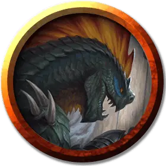

Людоящер заместитель вождя
Lizardfolk Subchief
Средний Гуманоид (Людоящер), нейтральный

Класс Доспеха 14 (природный доспех)
Хиты 52 (8к8 + 16)
Скорость 30 футов, плавая 30 футов
| мод | спас | ||
|---|---|---|---|
| СИЛ | 14 | +2 | +2 |
| ЛОВ | 12 | +1 | +1 |
| ТЕЛ | 14 | +2 | +2 |
| мод | спас | ||
|---|---|---|---|
| ИНТ | 10 | +0 | +0 |
| МДР | 16 | +3 | +5 |
| ХАР | 12 | +1 | +1 |
Навыки Атлетика +4, Восприятие +5, Выживание +5
Чувства пассивное Восприятие 15
Языки Драконий
Опасность 3 (700 опыта)
Бонус мастерства +2
Особенности
Задержка дыхания. Людоящер может задержать дыхание на 15 минут.
Использование заклинаний. Людоящер является заклинателем 5-го уровня. Его базовой характеристикой является Мудрость (Сл спасброска от заклинания 13, +5 к попаданию атаками заклинаниями). У него подготовлены следующие заклинания жреца:
• Заговоры (неограниченно): свет [light], священное пламя [sacred flame], уход за умирающим [spare the dying], чудотворство [thaumaturgy];
• 1 уровень (4 ячейки): приказ [command], направляющий снаряд [guiding bolt], очищение пищи и питья [purify food and drink];
• 2 уровень (3 ячейки): удержание личности [hold person], малое восстановление [lesser restoration], тишина [silence];
• 3 уровень (3 ячейки): проклятие [bestow curse], рассеивание магии [dispel magic].
Действия
Кинжал из клыка. Рукопашная атака оружием: +4 к попаданию, досягаемость 5 футов, одна цель. Попадание: 4 (1к4 + 2) колющего урона.
Челюсти Семуаньи (Перезарядка 5-6). Заместитель вождя призывает первобытную магию Семуаньи, призывая призрачную челюсть около цели, которую он может видеть в пределах 60 футов. Цель должна совершить спасбросок Ловкости Сл 13, получая 22 (5d8) колющего урона при при провале или половину этого урона при успехе. Существо, которое проваливает этот спасбросок, становится испуганным до конца своего следующего хода.
Описание
Людоящер заместитель вождя (описанный в "Опасность в Дануотере") - набожный жрец Семуании, поклоняющийся своему богу так же, как и жрец. Он владеет кинжалом, изготовленным из большого крокодильего клыка, благословленного Семуаньей, символизирующим доблесть заместителя вождя как в бою, так и в набожности.